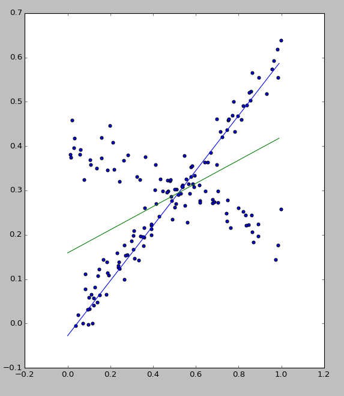
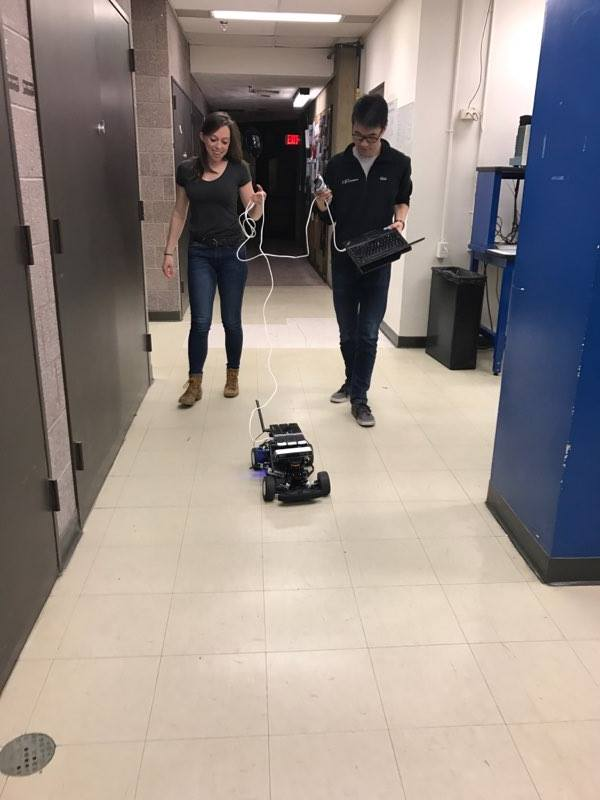

Lab 3 Report
Download as a PDF1 Introduction
This lab project asks teams to write scripts for the RACECAR robot to detect obstacles and follow a wall using the onboard LIDAR. We broke the lab down into individual projects: the safety module, wall detection, and control. We will detail our technical approach and methods to validate our code, and then we will discuss our team organization and results. [Kevin]
2 Methodology
The main parts of the project to be implemented were:
- Safety controller to stop the RACECAR if there is an obstacle
- Wall detector and follower
- PID or PD steering controller to follow the wall
There were three steps to implement the safety controller: reading in the LIDAR data, analyzing the data, and sending a response.
To read in the data in safety.py, we set up a subscriber to the LaserScan topic and linked it to a callback method.
We implemented a simple filter within the callback method to analyze the range data and decide if there was an obstacle in front of the car. First, we only considered the data within ±30 degrees of the front of the robot. Then, we removed all points that were above the maximum meaningful value, since that indicates there isn’t anything close to the robot. The leftover data points were averaged to the distance of an object in front of the robot. We keep points below the minimum range the LIDAR can report because those can indicate that the car is very close to a wall.
Finally, with the average distance of any objects in front of the car, we used a threshold to determine whether to send the stop message to the robot. After testing on the real robot, we decided that it was reasonable to have the robot stop if it was less than half of a meter away from some obstacle. Being able to get closer to walls also allows the robot to make tight turns with a wall on the outside of the turn without stopping itself. To send the actual stop message, we sent a message telling to stop moving on the safety topic, which overrides other autonomous drive commands. [Kevin and Katy]
2.2 Wall-Follower with RANSAC Implementation
The first step was to assign subscriber and publisher to the wall_follower.py script. The wall follower output was written to vesc/high_level/ackermann_cmd_mux/input/nav_0. This involved finding the type of data that was being given to us from the LaserScan, what type of data would be necessary to input to the controller, and searching the source for each message type for detailed functionality.
The wall_follower.py script was completed by defining a function for finding the right wall, and also creating a wall_follower class. The class defines an __init__ function to subscribe to messages from LaserScan and publish to the high-level command mux /nav_0. The functions in the wall_follower class are as follows:
- __init__(self) : Subscribes to messages from LaserScan topic and publishes to command mux /nav_0
- handleLaserScan(self, scan) : Gets the position and orientation of the right wall and updates the path withe the steering controller
- getRightWall(self, scan) : Selects only the data points in range MIN_SCAN_ANGLE to MAX_SCAN_ANGLE degrees then converts the points into cartesian coordinates. It also calls ransac to generate a linear model. The function returns (1) the distance to the wall on the positive x-axis of the RACECAR, and (2) the angle of the wall from the vertical.
- steeringController(self, distance, theta) : Implements the proportional control. This function is discussed in Section 2.3 below.
The wall-follower and controller teams matched outputs to inputs, respectively. The wall-follower function outputs the current distance in the +x-direction and the angle of the wall, and the steering controller takes these values as input. The team also decided collectively to implement the RANSAC method to estimate the location of the right wall. This was decided because it would be more robust to outliers, and we will be using it later in the semester so it was advantageous to have a working implementation already.
RANSAC is a Monte Carlo algorithm used to fit a curve to a set of points containing outliers. In our case since we were detecting walls, the curves we fit were lines. The algorithm randomly selects a sample subset of points and fits a line using linear regression to those points. It then measures how many data points in the entire set can be described with that line, by measuring the number of points that are within a given threshold distance of that line. The line that describes the most points is chosen. After a fixed number of iterations this algorithm will converge to a line that fits the data without outliers with very high probability.
In the RANSAC implementation, we set the number of sampled points to 2 and the number of iterations to 100. The threshold distance of points considered to be included on the wall was set to 0.1 m. The number of iterations is high, but it makes the system robust. As we want the robot to go faster we can lower the number of iterations to improve performance while reducing reliability. So far a basic filter has been added in order to remove the most obvious outliers (data points at the maximum range distance of 10 meters) and points that the LIDAR picks up that are within the car itself. [Caroline and Trevor]
2.3 Proportional Controllers
Following the lab suggestions and our own experience with controls, we implemented a PD controller. After getting the proportional controller to give us an oscillating yet successful trial, the derivative constant was tweaked to remove the oscillations. We were able to implement a successful PD distance-based controller in the simulator.
Although the PD controller was successful in the simulator, we opted to also implement a simpler proportional controller. This controller had two error terms – one term for the distance to the wall and one for the angle to the wall. This proved to be more successful, and with a bit of tuning we had the simulation follow the wall with a very short rise time at a slow speed (2 m/s). It managed to follow some of the shallower turns in the wall, but had trouble taking sharp turns to the left, as the safety controller would sense and approaching wall and stop the robot. The final controller with two proportional terms is essentially a PD controller as the angle error term approximates as the derivative of the distance error. The mix of proportional controllers was preferred over the PD controller because it was more intuitive to tune. [Josh, Sasha, and Kevin]
3 Testing and Implementation
3.1 Testing RANSAC
We wrote a randomized test to test the accuracy of our RANSAC implementation. The test generated randomly sampled points from two lines with added gaussian noise. One of the lines was more sparsely sampled than the other and treated as outliers. In the figure right, there is a line with positive slope sampled 100 times, and a line with negative slope sampled 60 times. The line with negative slope is treated as a set of outliers. In the figure, the normal linear regression model (green line) is skewed by the outliers. Our RANSAC implementation (blue line), however fit a line exactly to line with positive slope. [Trevor]
3.2 Testing in Gazebo
Before testing our system on the car, we tested basic functionality in Gazebo. For the safety module, we tested basic obstacle avoidance by driving the car towards walls and echoing the messages being sent from the safety module. In doing so, we uncovered many bugs caused mainly by flawed assumptions about the LIDAR parameters. Similarly, we tested the RANSAC implementation which we got to work after working out the geometry of the last scan data.
We also tuned and tested our P controller in the simulator. We were able to find values for our proportional constants that caused the system to quickly converge without oscillations in simulation, and the same model worked on the car the first time. We were impressed by how well the simulation had transferred to the real car. [Trevor, Kevin, Sasha, and Josh>
3.3 Implementing with the Robot
We had initial problems uploading code to the robot as the robot was improperly updating with wstool update. Once we manually pulled the updates from git, we were able to control the robot with the scripts successfully.
Once this issue was identified and fixed, the team tested the program on the robot by first holding the robot in the air next to a wall and changing its orientation. The robot responded exactly as intended; it turned appropriately as we pointed it towards and away from the wall.
When this capability was demonstrated, the speed was set low for safety in the lab and the robot was tested around the lab and down the hallway. It converged to the intended distance from the wall without oscillation even around turns. The robot occasionally missed turns into alleys in the lab which we attributed to the presence of other walls in view of the LIDAR. Some videos and photos were taken of this process, and can be seen in the gallery section of the Team 8 website. [Kevin, Caroline, and Sasha]
4 Teamwork
This lab more than the previous one (Lab 2) gave the team an opportunity to practice and display their ability to work well on a team. As aforementioned in this report, the team was split into three subteams of two people each and then integrate each of the parts in order to involve everybody in the process as well as to be more efficient. Each subteam worked together and split up their direct responsibilities well. The work division in this lab also required subteams to interface with each other enough to make sure that the parts would be able to be integrated. Thus far in the course team has worked together with a positive and supportive work environment. [Caroline]
5 Conclusion
All objectives of this lab, as defined earlier in the report, were met. A safety script was written so that the robot stopped when it was in danger (i.e. there was a wall in front of it). A wall follower script was written with a RANSAC wall-finding implementation. Using proportional control for both distance and angle from the wall, the robot controlled itself quickly and stably. The robot currently is able to follow a wall on the right and stop itself in the case of imminent crash. It does miss a turn or quick change in the geometry of the wall sometimes, which show the limits of our wall detection algorithm. It was also identified that the program could be changed to follow the left wall if necessary with simple modifications to the code. The team was successful in this lab and is looking forward to the next one. [Caroline]